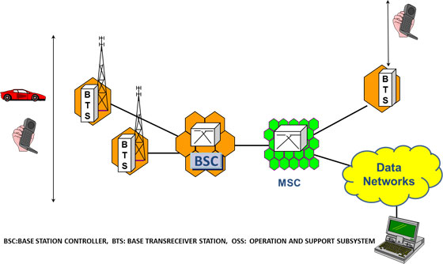
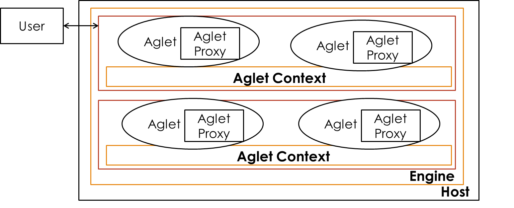

Unit 1
Mobile Computing
What is Mobile Computing?
Mobile computing is a technology that enables the wireless transmission of data, voice, and video through mobile devices without relying on fixed physical connections.
Main Components of Mobile Computing
✅ Mobile Communication
- Involves protocols, services, bandwidth, and portals that enable seamless connectivity.
- Supports wireless communication over Wi-Fi, Cellular Networks (3G, 4G, 5G), and Bluetooth.
✅ Mobile Hardware
- Includes portable devices that access mobility services:
- Smartphones üì±
- Tablets
- Laptops
- Personal Digital Assistants (PDAs)
- Wearable Devices ⌚
✅ Mobile Software
- Operating systems and applications that run on mobile devices.
- Examples: Android, iOS, Windows Mobile, Mobile Web Browsers, and Apps.
- Acts as the engine that powers mobile functionalities.
Applications of Mobile Computing
✅ Web & Internet Access – Enables browsing, cloud computing, and real-time communication.
✅ Global Positioning System (GPS) – Provides navigation, tracking, and geolocation services.
✅ Emergency Services – Supports disaster response, medical alerts, and real-time rescue coordination.
✅ Entertainment Services – Powers mobile gaming, streaming platforms, and digital media.
✅ Educational Services – Supports e-learning, mobile classrooms, and virtual collaboration.
Evolution of Mobile Computing
The evolution of mobile generations (G) marks advancements in speed, technology, frequency, data capacity, and latency, revolutionizing communication and connectivity.
üì° First Generation (1G) ‚Äì Analog Communication
üìÖ Introduced: 1980s ‚Äì 1990s
üìå Technology Used: AMPS (Advanced Mobile Phone System), based on FDMA
⚡ Speed: 2.4 kbps
✅ Features:
- Allowed voice calls but limited to one country.
- Used analog signals, leading to poor voice quality and frequent call drops.
- Weak battery life and limited network capacity.
- No data services, only voice communication.
üì≤ Second Generation (2G) ‚Äì Digital Communication
üìÖ Introduced: 1990s
üìå Technology Used: GSM & CDMA
⚡ Speed: Up to 144 kbps
✅ Features:
- Digital signals replaced analog, improving voice clarity.
- Introduced SMS & MMS for text and picture messaging.
- Enabled conference calling, call hold, and international roaming.
- Used circuit-switched and packet-switched networks.
- Introduced GPRS (General Packet Radio Service), achieving speeds of 50 kbps to 1 Mbps.
üì∂ Transition from 2G to 3G: 2.5G & 2.75G
2.5G (GPRS – General Packet Radio Service)
üìå Technology Used: GSM with GPRS
⚡ Speed: 64 – 144 kbps
✅ Improvements Over 2G:
- Introduced always-on internet access.
- Enabled email, basic web browsing, and multimedia messaging (MMS).
- Used packet-switched data, improving efficiency.
- Lower latency than 2G.
- Introduction of camera phones.
2.75G (EDGE – Enhanced Data rates for GSM Evolution)
üìå Technology Used: GSM with EDGE (Enhanced GPRS)
⚡ Speed: Up to 384 kbps
✅ Enhancements Over 2.5G:
- Faster data transmission, enabling video streaming and online gaming.
- More efficient spectrum usage, improving network performance.
- Served as a stepping stone to 3G, enhancing mobile internet and multimedia communication.
üöÄ 2.5G and 2.75G bridged the gap between traditional mobile calling and the era of high-speed mobile internet!
üì° Third Generation (3G) ‚Äì High-Speed Mobile Data
üìÖ Introduced: 2000s
üìå Technology Used: WCDMA, HSPA (High-Speed Packet Access)
⚡ Speed: Up to 2 Mbps
✅ Features:
- Enabled web browsing, email, video downloads, and picture sharing.
- Provided support for multimedia applications, including video calling.
- Increased bandwidth and data transfer rates for improved web-based applications.
- Improved voice clarity and reduced latency compared to 2G.
⚡ Fourth Generation (4G) – High-Speed Broadband Connectivity
üìÖ Introduced: 2010s
üìå Technology Used: LTE (Long-Term Evolution), WiMAX
⚡ Speed: 10 Mbps – 1 Gbps
✅ Features:
- Ultra-fast data speeds with peak downloads of 100 Mbps.
- Supported high-quality streaming for HD video and VoIP (Voice over IP).
- Introduced IP-based telephony (VoLTE) for improved call quality.
- Combination of Wi-Fi and WiMAX for broader coverage.
- Enhanced security and reliability in mobile communication.
üì° Fifth Generation (5G) ‚Äì The Future of Mobile Connectivity
üìÖ Introduced: 2020s
üìå Technology Used: mmWave, Massive MIMO, Network Slicing
⚡ Speed: Up to 20 Gbps
✅ Key Advancements Over 4G:
- Higher Data Rates – Up to 20 Gbps for ultra-fast downloads and real-time communication.
- Lower Latency – Reduced response time, essential for real-time gaming, augmented reality (AR), and virtual reality (VR).
- Increased Network Capacity – Supports massive IoT (Internet of Things) connections.
- Improved Reliability – Network slicing allows dedicated networks for specific applications.
üìå Summary of Mobile Generations
| Generation | Technology Used | Speed | Key Features |
|---|---|---|---|
| 1G | AMPS (Analog) | 2.4 kbps | Voice calls, poor quality, no data |
| 2G | GSM & CDMA | 144 kbps | Digital voice, SMS, MMS, basic internet |
| 2.5G | GPRS | 64 – 144 kbps | Always-on internet, emails, camera phones |
| 2.75G | EDGE | Up to 384 kbps | Faster browsing, video streaming |
| 3G | WCDMA, HSPA | Up to 2 Mbps | Video calls, multimedia, web-based apps |
| 4G | LTE, WiMAX | 10 Mbps – 1 Gbps | HD streaming, VoLTE, broadband connectivity |
| 5G | mmWave, MIMO | Up to 20 Gbps | Ultra-fast speeds, IoT, AI-powered networks |
üì° Cellular Architecture
The cellular network is structured in a hierarchical way to provide efficient communication across large geographical areas.


üîπ Key Components:
✅ Mobile Device (User Equipment) – Phones, tablets, or IoT devices.
✅ Base Transceiver Station (BTS) – Handles wireless communication with mobile devices.
✅ Base Station Controller (BSC) – Manages multiple BTS and assigns frequencies.
✅ Mobile Switching Center (MSC) – Connects mobile calls and manages handovers.
✅ Public Switched Telephone Network (PSTN) – Traditional wired telephone network.
✅ Packet Data Network (Internet) – Allows mobile data access and browsing.
✅ Cell Towers – Divides the service area into small cells to provide coverage.
Note
Mode of Communications
graph TD;
subgraph Circuit-Switched Network
A((User A)) -- Dedicated Path --> B((User B))
end
subgraph Packet-Switched Network
A1((User C)) -- Packet 1 --> C1[Router] --> D1((User D))
A1 -- Packet 2 --> C2[Router] --> D1
A1 -- Packet 3 --> C3[Router] --> D1
endMobile Computing Architecture
Mobile computing architecture ensures seamless communication, data management, and user interaction, making applications efficient and scalable.
üìç Location-Based Services (LBS)
✅ Location-Aware Services
- Identify available services like printers, fax machines, phones, and servers in the local environment.
✅ Follow-On Services
- Automatic call forwarding and workspace transmission to the user’s current location.
✅ Information Services
- Push: Automatic alerts (e.g., special offers in a supermarket).
- Pull: User-requested data (e.g., where can I find my favorite pastry?).
✅ Support Services
- Maintains cache, session state, and intermediate results, allowing smooth mobility.
✅ Privacy Management
- Controls who has access to location information.
Three-Tier Mobile Computing Architecture

üõ† Breakdown of the Three-Tier Architecture
✅ üì≤ Tier-1: Presentation Layer (User Interface)
- Where users interact with the mobile app.
- Handles buttons, menus, forms, and screens.
- Supports multiple users simultaneously.
✅ üåê Connection Layer (Access Network)
- Routes traffic between user devices and the backend system.
- Adapts to different devices and network conditions.
- Ensures efficient data transmission even if one route fails.
✅ ⚙️ Tier-2: Application Layer
- Process Management – Organizes tasks and workflows (e.g., food ordering steps).
- Business Logic – Enforces rules and decision-making (e.g., price calculations, discounts).
✅ üíæ Tier-3: Data Layer
- Database Management – Organizes data storage and retrieval (like a librarian).
- Data Store – The actual storage where information is kept (like a bookshelf).
üìå Why This Design?
✅ Scalability: More users can be handled by expanding any layer.
✅ Reliability: If one component fails, others continue functioning.
✅ Flexibility: Different layers can be updated or fixed independently.
✅ Adaptability: Works well on various devices and network conditions.
üìç Real-World Analogy ‚Äì A Restaurant Setup üçΩÔ∏è
| Layer | Restaurant Example |
|---|---|
| Presentation Tier | The dining area where customers interact with waiters. |
| Access Network | The waiters who take orders to the kitchen. |
| Application Tier | The kitchen where food is prepared based on orders. |
| Data Tier | The pantry where ingredients are stored. |
Unit 2
Concept of Multiplexing
Multiplexing is a key technique in communication systems that allows multiple users to share a single medium with minimal or no interference.
Real-Life Analogy
Highways as a Shared Medium: - Multiple vehicles (users) travel on the same highway (medium) without interference. - Space Division Multiplexing (SDM): Cars use separate lanes. - Time Division Multiplexing (TDM): Cars use the same lane at different times.
üõ† Medium Access Control (MAC) Protocols
- ✅ What is MAC?
A sublayer of the Data Link Layer responsible for coordinating transmissions between multiple nodes.

Data link layer divided into two functionality-oriented sublayers
⚡ The MAC Problem in Wireless Networks
üìå When multiple nodes transmit simultaneously, their signals collide, causing:
Lost data and wasted bandwidth.
Increased retransmissions, leading to higher delays and lower efficiency.
üìå Solution? Use a protocol to manage access to the shared medium.
✅ What MAC Protocols Must Do:
- Minimize Collisions to optimize bandwidth usage.
- Decide when a station can transmit to avoid conflicts.
- Handle busy channels by deciding whether to wait or retransmit.
- Resolve collisions efficiently to ensure smooth data transmission.
Here is the Mermaid diagram representation of Multiple Access Protocols along with a brief explanation for each type:
graph TD;
A[Multiple-Access Protocols] --> B[Random Access Protocols]
A --> C[Controlled-Access Protocols]
A --> D[Channelization Protocols]
B --> B1[ALOHA]
B --> B2[CSMA]
B --> B3[CSMA/CD]
B --> B4[CSMA/CA]
C --> C1[Reservation]
C --> C2[Polling]
C --> C3[Token Passing]
D --> D1[FDMA]
D --> D2[TDMA]
D --> D3[CDMA]✅ Random Access Protocols (No fixed control, contention-based):
- ALOHA – Transmits data randomly; high collision rate.
- CSMA (Carrier Sense Multiple Access) – Senses channel before sending data to reduce collisions.
- CSMA/CD (Collision Detection) – Detects collisions and retransmits (used in Ethernet).
- CSMA/CA (Collision Avoidance) – Avoids collisions before transmission (used in Wi-Fi).
✅ Controlled-Access Protocols (Centralized control, avoids collisions):
- Reservation – Nodes reserve slots before transmission.
- Polling – Central controller decides which node transmits.
- Token Passing – A token circulates, granting transmission rights.
✅ Channelization Protocols (Divide channel into separate logical paths):
- FDMA (Frequency Division Multiple Access) – Assigns different frequencies to users.
- TDMA (Time Division Multiple Access) – Allocates time slots to users.
- CDMA (Code Division Multiple Access) – Uses unique codes for simultaneous transmissions.
Medium Access in Wireline vs. Wireless Networks
üì° Medium Access in Wireline Networks (CSMA/CD)
✅ Assumptions:
- Signal strength remains constant across the wire.
- Same signal strength can be assumed throughout if the wire length is within standard limits.
- Collisions can be detected by any node listening to the wire.
✅ CSMA/CD (Carrier Sense Multiple Access with Collision Detection) Operation:
1. Carrier Sense – Listen to the wire; if free, send data.
2. Collision Detection – If a collision is detected while transmitting, stop immediately and send a jam signal to notify all nodes.
üîπ Why CSMA/CD Works Well in Wired Networks?
- The signal condition is the same across the medium.
- Collisions are easily detectable, ensuring efficient retransmission.
üì∂ Medium Access in Wireless Networks (CSMA/CA)
✅ Challenges in Wireless Medium:
- Signal strength varies due to distance and obstacles.
- Attenuation follows the inverse square law (\( 1/d^2 \)), weakening signals over distance.
- Collisions at the receiver cannot be detected by simply listening to the medium.
✅ CSMA/CD Issues in Wireless:
1. Carrier Sense – The sender may detect an idle medium, but the receiver may still experience a collision.
2. Collision Detection – The sender cannot always detect a collision at the receiver’s end.
üîπ Why CSMA/CD Fails in Wireless?
- Wireless nodes have different perspectives of the medium.
- The hidden terminal problem causes undetected collisions.
- Instead, wireless networks use CSMA/CA (Collision Avoidance) to prevent collisions before they happen.
Wireless Medium Access Problems
Wireless networks face unique challenges due to signal interference, attenuation, and variable reception.
Hidden Terminal Problem
Scenario:
- A and C cannot hear each other but are both within B’s range.
- A starts transmitting to B.
- C senses the medium as free (since it cannot hear A) and starts transmitting to B at the same time.
- A collision occurs at B, but neither A nor C detects it.
Cause:
- Other senders are hidden from the current sender, leading to undetected collisions.
Solution:
- The RTS/CTS (Request to Send / Clear to Send) mechanism helps avoid hidden terminal issues by coordinating access.

Exposed Terminal Problem
Scenario:
- B is transmitting to A.
- C senses the medium as busy because B is transmitting.
- However, C could have transmitted to D without causing a collision.
- C unnecessarily defers its transmission, reducing network efficiency.
Cause:
- The sender mistakenly assumes the medium is in use, leading to wasted transmission opportunities.
Solution:
- Spatial reuse techniques allow simultaneous non-interfering transmissions.
sequenceDiagram
participant R1 as R₁ (Receiver 1)
participant S1 as S₁ (Sender 1)
participant S2 as S₂ (Sender 2)
participant R2 as R₂ (Receiver 2)
Note over S1,R1: 1. Initial Communication Setup
S1->>R1: Request to Send (RTS)
R1->>S1: Clear to Send (CTS)
Note over S1,R1: 2. Data Transfer Begins
S1->>R1: DATA Transmission
Note over S2,R2: Medium is Busy
S2--xR2: Waiting for Clear Medium
Note over S1,R1: 3. Successful Data Transfer
activate S1
activate R1
Note over S1,R1: Data Transfer Complete
deactivate S1
deactivate R1
Note over S2,R2: Medium is Now ClearNear/Far Terminal Problem
Scenario:
- B is closer to C than A.
- B’s stronger signal overpowers A’s weaker signal at C.
- C cannot receive A’s transmission properly, causing data loss.
Cause:
- Signal strength imbalance leads to weaker signals being drowned out by stronger ones.
Solution:
- Power control mechanisms ensure all terminals are detectable at the base station.
- GSM avoids the problem by using time slots (TDMA), preventing simultaneous transmission.
- CDMA uses power control so all signals arrive at the receiver with equal strength.

Multiplexing
Wireless channels can be multiplexed in four key dimensions:
- Time (t): A channel occupies the entire frequency spectrum for a specific time period.
- Space (s): The same frequency can be reused if base stations are sufficiently separated.
- Frequency (f): The spectrum is divided into smaller frequency bands.
- Code (c): Each channel is assigned a unique code for transmission.
Space Division Multiplexing (SDM)
- SDM involves separating channels in three dimensions: Code, Time, and Frequency.
- The Space dimension is represented by circles indicating interference ranges.
- To prevent overlap, channels are mapped to separate spaces (s1 to s3). This creates "guard space" between channels.
- Channels k1 to k3 are clearly separated, while additional spaces are needed for channels k4 to k6.
- This principle is similar to how old analog phone systems provided separate copper wires for each subscriber.
Example: FM Radio
- Multiple radio stations can use the same frequency without interference, as long as they are separated geographically.
Key Takeaways:
- Guard space: Needed in all multiplexing schemes to prevent interference.
- SDM: Effective for localized transmissions like FM radio but not scalable for dense urban areas.
Note
If several radio stations want to broadcast in the same city - Solution?
SDM not suitable
Solution:
Multiplexing through
Frequency
Time
Code
Frequency Division Multiplexing (FDM)
Frequency Division Multiplexing (FDM) divides the frequency dimension into several non-overlapping frequency bands. Each channel \(k_i\) is assigned a specific frequency band, which can be used continuously by the sender.
- Guard Spaces: Essential to prevent frequency band overlap (also called adjacent channel interference).
- Example: Used by radio stations within the same region, where each station broadcasts on its own frequency.

How FDM Works
- Simple Scheme: The receiver only needs to tune into the specific frequency assigned to the sender.
- Usage: Common in systems like radio broadcasting, where multiple stations use different frequencies to avoid interference.
Advantages of FDM
- Simplicity: Very simple to implement, as it requires minimal coordination between the sender and receiver.
- Continuous Use: Each sender can use its frequency band continuously, making it suitable for applications like radio broadcasting.
Disadvantages of FDM
- Frequency Resource Waste: In mobile communication, where communication is short-term, dedicating an entire frequency band to each scenario would waste valuable frequency resources.
- Limited Flexibility: The fixed assignment of frequencies to senders makes the system inflexible, limiting the number of senders that can be supported.
Time Division Multiplexing (TDM)
In Time Division Multiplexing (TDM), each channel \(k_i\) is allocated the entire bandwidth for a specific time period. Multiple senders use the same frequency but at different points in time.
- Guard Space: Time gaps between transmissions are required to prevent overlap.
- Co-channel Interference: Occurs if transmissions overlap in time, similar to cars colliding on a highway.

How TDM Works
- Precise Synchronization: Senders must be precisely synchronized, which requires clocks or a method to distribute synchronization signals.
- Receiver Tuning: The receiver must not only adjust the frequency but also tune to the exact time slot for receiving data.
- Flexibility: TDM is flexible, allowing more time for senders with heavy traffic and less time for those with lighter loads.
Disadvantages of TDM
- Synchronization Requirement: All senders need to be synchronized, which adds complexity.
- Time Slot Coordination: A receiver must adjust both the frequency and the correct time slot.
- Co-channel Interference: If multiple senders choose the same frequency at the same time, interference occurs.
Time + Frequency Division Multiplexing (TDMA + FDMA)

A combination of both TDM and FDM can be used, where each channel is allotted a specific frequency for a set time period.
- Guard Spaces: Required in both time and frequency dimensions.
- Example: GSM uses TDMA + FDMA for communication between mobile phones and base stations.
Advantages of TDMA + FDMA
- Robustness: Provides some protection against frequency selective interference.
- Protection Against Tapping: The sequence of frequencies must be known to intercept data, providing some protection.
Disadvantages of TDMA + FDMA
- Coordination: Coordination between senders is required for frequency and time management.
- Interference: If two senders use the same frequency at the same time, interference occurs. Frequency hopping can minimize this, reducing interference time.
Key Takeaways
- TDM: Simple but requires precise synchronization, making it suitable for scenarios where each sender needs to transmit in defined time slots.
- TDMA + FDMA: Offers better robustness and protection, but requires complex coordination and management of both time and frequency.
Code Division Multiplexing (CDM)

Code Division Multiplexing (CDM) is a relatively new scheme used in commercial communication systems, having been initially used in military applications due to its built-in security features.
- Working Principle: All channels \(k_i\) use the same frequency at the same time. Separation is achieved by assigning each channel its own unique "code."
- Guard Space: This is ensured by using codes with a sufficient "distance" in the code space, such as orthogonal codes.
Example: Party with Global Participants
Imagine a party with many participants from different countries who communicate using the same frequency range (approx. 300–6000 Hz):
- Same Language (SDM): If everyone speaks the same language, space division multiplexing (SDM) is required to separate groups.
- Different Languages (CDM): As soon as another language is used, a new code (language) can be tuned into, clearly separating communication in different languages. Other languages appear as background noise.
CDM Security
-
Built-in Security: If the receiver doesn’t know the code (or language), the signals are received but are essentially useless. This creates a secure channel in a potentially "hostile" environment, much like using a secret language at the party.
-
Guard Space: Codes must be sufficiently distinct (e.g., Swedish and Finnish are orthogonal enough, but Swedish and Norwegian are too similar for separation).
Advantages of CDM
-
Interference Protection: CDM provides strong protection against interference and tapping. The huge code space allows for easy assignment of unique codes to different senders without significant issues.
-
Security: A secret code can create a secure channel, as only those with the correct code can decode the message.
Disadvantages of CDM
-
Complex Receiver: The receiver must know the code and be able to decode the signal amidst background noise. This increases the complexity of the receiver.
-
Synchronization Requirement: The receiver must be precisely synchronized with the transmitter for accurate decoding.
-
Power Control: Signals must reach the receiver with equal strength. If signals are uneven, such as someone speaking too loudly near the receiver, the loud signal could drain the others, making it difficult for the receiver to decode other channels.
Key Takeaways
- CDM: Provides secure and interference-resistant communication but requires precise synchronization and power control.
- Security: Built-in security by using unique codes (or languages) for each communication channel.
- Complexity: High complexity due to the need for the receiver to decode signals accurately and maintain synchronization.
Comparison of Multiplexing Techniques
| Approach | SDMA (Space Division) | TDMA (Time Division) | FDMA (Frequency Division) | CDMA (Code Division) |
|---|---|---|---|---|
| Idea | Segment space into cells/sectors | Segment sending time into disjoint time-slots | Divide the frequency band into sub-bands | Spread the spectrum using orthogonal codes |
| Terminals | Only one terminal active per cell/sector | All terminals share the same frequency but transmit in time slots | Each terminal has its own dedicated frequency | All terminals can be active simultaneously using unique codes |
| Signal Separation | Cell structure with directed antennas | Synchronization in the time domain | Filtering in the frequency domain | Codes and special receivers |
| Advantages | Simple, increases capacity per km² | Fully digital, very flexible | Simple, robust, and well-established | Highly flexible, less planning needed, supports soft handover |
| Disadvantages | Inflexible, fixed antennas required | Guard space needed, synchronization is complex | Inflexible, limited by available frequencies | Complex receivers, requires precise power control |
| Comment | Used in combination with TDMA, FDMA, or CDMA | Standard in fixed networks, often combined with FDMA/SDMA in mobile networks | Often combined with TDMA (frequency hopping patterns) and SDMA (frequency reuse) | Used in 3G systems, requires integration with TDMA/FDMA |
Unit 3
Logical Mobility
Logical Mobility refers to the ability to transfer software components, code, or computational elements between different systems or devices.
Types of Logical Mobility:
- Software Programs & Applications: Moving entire applications between devices.
- Code Segments & Modules: Transferring scripts or functions dynamically.
- Objects & Data Structures: Migrating serialized objects or database entries.
- Computational Processes: Shifting active processing tasks to another system.
Examples:
- App Downloads: Installing an application from an app store.
- Web Execution: A browser fetching and executing JavaScript from a server.
Process Migration
Process Migration is the transfer of an executing process from one computing system to another while maintaining its state.
Key Aspects of Process Migration:
- Process = Program Under Execution
- State Transfer Includes:
- Address Space: Memory and allocated resources.
- Execution Point: CPU register contents.
- Communication State: Open files, message channels.
- OS-dependent States: Any system-specific data.
Migration Process:
- Two Instances Exist: A source and destination process.
- Final Handoff: The destination instance takes over as the migrated process.
- Remote Execution: A process running on another machine is called a remote process.
Example:
- Watching a movie on a smart TV, then continuing playback on a tablet while traveling.
Procss Migration:
Step 1: Migration Request Issued
- A migration request is sent to a remote node.
- After negotiation, the migration is accepted.
Diagram:

Step 2: Process Detachment
- The process is suspended on the source node.
- It is marked as "migrating."
- Communication is temporarily redirected.
Diagram:

Step 3: Temporary Communication Redirection
- Incoming messages are queued.
- Messages are delivered after migration.
Diagram:

Step 4: Process State Extraction
- The process's memory, registers, communication state, and kernel context are extracted.
Diagram:

Step 5: Destination Process Instance Created
- A new process instance is initialized on the remote node.
Diagram:

Step 6: State Transfer
- The extracted state is transferred to the destination node.
Diagram:

Step 7: Forwarding References
- References (e.g., file descriptors, network sockets) are updated to point to the new process instance.
Diagram:

Step 8: Process Resumed
- The new process instance resumes execution on the remote node.
Diagram:

Advantages of Process Migration
- Dynamic Load Distribution
-
Balances the load by migrating processes from overloaded nodes to less loaded ones.
-
Fault Resilience
-
Ensures continuity by migrating processes from nodes that have partially failed or are at risk of failure.
-
Improved System Administration
-
Facilitates maintenance by moving processes from nodes that are about to be shut down or become unavailable.
-
Data Access Locality
-
Enhances efficiency by migrating processes closer to the data source, especially useful in mobile environments.
-
Resource Sharing
-
Allows access to specialized hardware by migrating a process to a node equipped with the required resources.
-
Mobile Computing
- Enables users to continue running applications seamlessly as they move between networks or devices.
Applications of Process Migration
- Parallelizable Applications – Distributing computational tasks across multiple nodes.
- Long-running Applications – Allowing execution across different nodes without interruption.
- Generic Multiuser Workloads – Managing distributed workloads effectively.
- Pre-emptable Applications – Processes that can be temporarily suspended and resumed elsewhere.
- Migration-aware Applications – Applications designed to adapt to migration scenarios.
- Network & Mobile Computing Applications – Ensuring service continuity as devices move across networks.
Alternatives to Process Migration
- Remote Execution
- Executes code on a remote node instead of migrating the entire process.
-
Faster than migration due to lower data transfer costs.
-
Cloning
- Creates a copy of the process on a different node using a remote fork mechanism.
- Unlike migration, both instances continue running using distributed shared state.
-
Higher complexity but useful when state inheritance is required.
-
Mobile Agents
- Uses Java, Tcl/Tk, or other technologies to move objects or scripts dynamically.
- Achieved at the middleware level using frameworks like:
- Common Object Request Broker Architecture (CORBA)
- Distributed Objects
ü§ñ Mobile Agents
Mobile Agents are software entities that autonomously move between computers and continue execution on the destination machine.
- üèÉ‚Äç‚ôÇÔ∏è Self-driven: Can function independently, even if the user disconnects from the network.
- üöÄ Transportable: They move dynamically across systems.
- üîÑ Data-Carriers: Store information and operate without requiring continuous communication.
üõ§Ô∏è Types of Mobile Agents
- Agents with Pre-defined Path üó∫Ô∏è
-
Follow a specific, predetermined route across nodes.
-
Agents with Undefined Path (Roamer) üèûÔ∏è
- Wander freely across the network, dynamically choosing destinations.
ü߆ Properties of Mobile Agents
A Mobile Agent is a software object that exists within an execution environment and possesses these key traits:
✅ Mandatory Properties
- üîÑ Reactive ‚Äì Responds to environmental changes.
- ü§ñ Autonomous ‚Äì Controls its own actions.
- üéØ Goal-Driven ‚Äì Works proactively towards objectives.
- ⏳ Temporally Continuous – Runs indefinitely.
üì° Optional Properties
- üó£ Communicative ‚Äì Can interact with other agents.
- üöÄ Mobile ‚Äì Can migrate between hosts.
- üìà Learning ‚Äì Adapts based on past experiences.
üîÑ Life Cycle of Mobile Agents

✔️ Adapts to both home and foreign environments.
✔️ Switches between nodes as needed.
✔️ Focuses on achieving the final objective.
✔️ Operates autonomously without external intervention.
üñ•Ô∏è Mobile Agent Platforms
- üõú Specialized Servers interpret agent behavior and handle communication.
- üöÄ Autonomous Navigation ‚Äì Agents can choose and request migration.
- ⚙ Platform-Independent Execution – Can run on any machine without pre-installation.
- ☕ Java-Based Execution – Uses Java Virtual Machine (JVM) to dynamically load code.
üß≠ Types of Mobile Agents:
✅ One-hop Agents – Migrate to a single destination.
üåç Multi-hop Agents ‚Äì Roam across multiple locations dynamically.
üèóÔ∏è Components of a Mobile Agent
A Mobile Agent consists of two key components:
- üìú Code ‚Äì Instructions defining the agent‚Äôs behavior.
- ü߆ Execution State ‚Äì The agent‚Äôs progress and memory.
üí° Unlike regular programs where code is stored on disk and execution state is in RAM, mobile agents carry both together when migrating!
Migration Process:
üîπ Agent moves → Carries both its code & execution state → Resumes seamlessly at the new host.
üåü Characteristics of Mobile Agents
‚úîÔ∏è Unique Identity ‚Äì Each agent has a distinct presence. üîç
‚úîÔ∏è Aware of Other Agents ‚Äì Can detect and interact with other agents. ü§ù
✔️ Message Handling – Sends & receives structured messages. ✉️
‚úîÔ∏è Host Communication ‚Äì Can communicate with its hosting environment. üè°
‚úîÔ∏è Concurrent Execution ‚Äì Supports multiple agents running simultaneously. üîÑ
Agent Architecture

ü§ñ Mobile Agents vs. Process Migration
| Aspect | üöÄ Mobile Agents | üîÑ Process Migration |
|---|---|---|
| Control | Autonomous decision-making; agents decide when and where to move. | System-controlled; OS or network manager decides movement. |
| Intelligence | Built-in intelligence to adapt behavior. | No built-in intelligence; follows system instructions. |
| Decision Basis | Moves based on programmed objectives and current needs. | Moves based on system load and resource availability. |
| Flexibility | Can change destinations dynamically; supports multi-hop movement. | Fixed source-to-destination migration; single-hop only. |
| State Management | Carries both code & state together as a package. | State must be captured, transferred, and reconstructed. |
| Interaction | Can communicate with other agents and systems. | No inter-process communication during migration. |
üåê Client/Server vs. Mobile Agent Architectures
üì° Traditional Client/Server Model
- Requires continuous communication between client and server.
- Frequent request/response cycles increase network bandwidth usage.
üöÄ Mobile Agent Architecture
- Moves queries/transactions from client to server, reducing repetitive requests.
- Works offline and syncs results when the system is back online.
- Handles intermittent & unreliable networks effectively.
✅ Requirements for Mobile Agent Systems
- Portability ‚Äì Must run on different platforms without modifications. üíª
- Ubiquity ‚Äì Should be available across multiple network environments. üåç
- Network Communication ‚Äì Needs efficient mechanisms for sending/receiving data. üì°
- Server Security ‚Äì Must prevent unauthorized agent execution on a host. üîê
- Agent Security ‚Äì Protects agents from external threats or modifications. üõ°Ô∏è
- Resource Accounting – Tracks resource consumption for optimization. ⚙️
üìå Diagram: Mobile Agent vs. Client-Server Communication
sequenceDiagram
participant Client
participant Server
Client->>Server: üîÑ Request Data
Server-->>Client: üì© Response
Client->>Server: üîÑ Another Request
Server-->>Client: üì© Another Response
üöÄ Aglets: Java-Based Mobile Agent Platform
Aglets are a Java-based framework for mobile agents, designed by IBM. They allow objects to move between hosts on a network while maintaining their execution state.
üîÑ How Aglets Work
- üèÉ An Aglet can pause execution, move to a remote host, and resume execution.
- üì¶ When an Aglet moves, it carries its code and object states to the new host.
- üåç Multiple Aglets can run on a single node within different contexts.

üè¢ Aglet Context
An Aglet Context is the workspace where Aglets operate.
- üè† Stationary Object ‚Äì Provides a uniform execution environment.
- üåê Hosts Multiple Contexts ‚Äì A single network node can run multiple contexts.
üõ° Aglet Proxy
A proxy is a representative of an Aglet that: - Shields the Aglet from direct access to its public methods. - Hides its real location, ensuring location transparency.
üîÑ Aglet Life Cycle

| üèóÔ∏è Stage | üîç Description |
|---|---|
| Creation ✨ | Aglet is created within a context, assigned an identifier, and initialized. Execution starts immediately. |
| Cloning üߨ | Produces an identical copy of the Aglet in the same context, with a new identifier. |
| Dispatching üöÄ | Moves the Aglet to another context, removing it from the current one. Execution restarts at the destination. |
| Retraction üîÑ | Pulls the Aglet back to its original context after being dispatched. |
| Deactivation ⏸️ | Temporarily removes an Aglet from execution and stores it in secondary storage. |
| Activation ▶️ | Restores a deactivated Aglet back into a context. |
| Disposal üóëÔ∏è | Stops execution and removes the Aglet from the context permanently. |
üì° Aglet Communication
Aglets use messages and events to communicate and interact within their environment.
- üì¨ Message Communication
- üîÑ Synchronous ‚Äì Requires an immediate response.
-
üì© Asynchronous ‚Äì Messages are sent without waiting for an immediate reply.
-
üì¢ Event-Driven Communication
- üîÑ Used for reactive or proactive agents.
-
üìà Example: An Aglet can listen for a stock price change event and act accordingly.
-
üõ† Aglet API (Java-based) includes:
Aglet– Core agent class.Aglet Proxy– Ensures security and location transparency.Aglet Context– Execution environment for Aglets.Message– Communication mechanism.
üèõÔ∏è Applications of Aglets
- üõí E-commerce ‚Äì Mobile shopping assistants.
- üåç E-marketplaces ‚Äì Automated price comparison & negotiation.
- ✈️ Travel & Tourism – Dynamic air-ticket booking & package tour planning.
üîÑ Aglet Event Model
Aglets operate in an event-driven programming model.
There are three types of listeners that handle different events:
| üéß Listener Type | üìå Function |
|---|---|
| Clone Listener üߨ | Handles events before, during, and after an Aglet is cloned. |
| Mobility Listener üöÄ | Triggers actions before dispatching, during movement, and upon arrival at a new context. |
| Persistence Listener ⏳ | Manages events before deactivation and after activation of an Aglet. |
üìå Diagram: Aglet Event Flow
graph TD
A[Aglet Running] -->|Clone Event| B[Clone Listener]
A -->|Migration Event| C[Mobility Listener]
A -->|Deactivation Event| D[Persistence Listener]